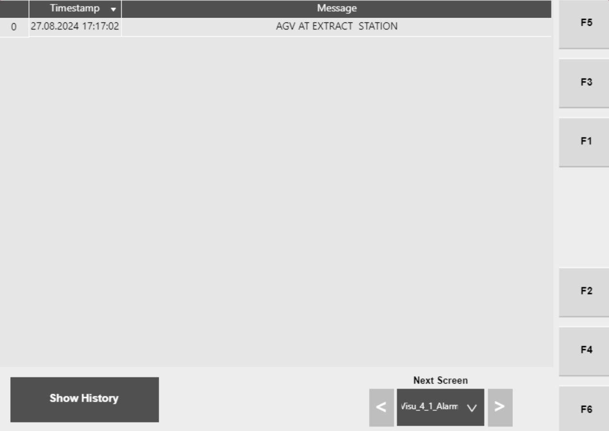

| Procedure ID | proc_verify_that_a_tipper_alarm_results_in_a_hospital_request_to_wcs_v1 |
|---|---|
| Title | Verify That a Tipper Alarm Results in a Hospital Request to WCS |
| Procedure Type | reference |
| Primary Role | L1_support |
| Support Safe | Yes |
| Validation Status | needs_sme_review |
| Merge Status | source_finalized |
Use the Hospital HMI alarm text and the documented alarm table entries to determine whether a current tipper alarm is explicitly identified as causing a Hospital request to the WCS or as causing the WCS to send the AGV/tote to the hospital for diagnosis.
Use when a tipper alarm is displayed and you need to verify from the source manual whether that alarm is one of the documented conditions that results in a Hospital request to the WCS.
Responsible role: L1_support
Instruction:
Open or view the Hospital HMI alarm list and read the displayed tipper alarm text exactly as shown, including the associated time-stamped entry if needed for identification.
Expected result:
The current alarm text is identified from the Hospital HMI alarm list.
Screens / Images:

Stop or Escalate If:
Responsible role: L1_support
Instruction:
Compare the displayed alarm text to the documented Left Tipper alarm entries in Table 4-23. Look specifically for entries whose documentation states that a Hospital request is sent to the WCS or that WCS will send the AGV/tote to the hospital for diagnosis.
Expected result:
A documented match is found, or it is determined that no explicit hospital-request statement is present for the displayed alarm.
Screens / Images:
Stop or Escalate If:
Responsible role: L1_support
Instruction:
For the matched alarm row in Table 4-23, review the Cause and Controller Response fields and confirm that the documented response explicitly states that a Hospital request is sent to the WCS or that WCS will send the AGV/tote to the hospital for diagnosis.
Expected result:
The matched row's documented Cause and Controller Response confirm whether hospital-request behavior is explicitly supported by the source.
Stop or Escalate If:
Responsible role: L1_support
Instruction:
Record that the alarm is a documented hospital-request condition only when the matched table entry explicitly states that response. If the source does not explicitly state it, record that the condition is not confirmed by this reference and escalate if clarification is needed.
Expected result:
The verification result is documented as confirmed, not confirmed, or requiring escalation based on the source wording.
Screens / Images:
Stop or Escalate If: